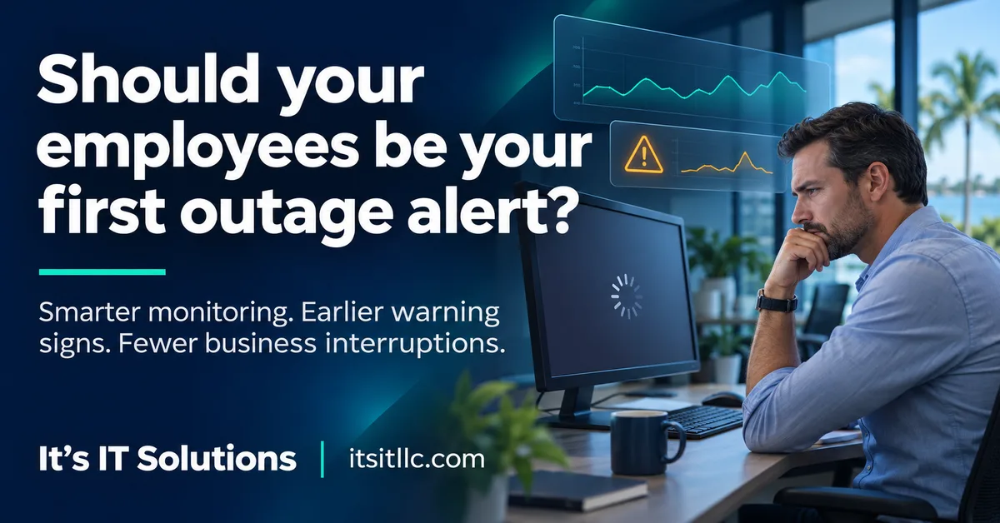

Your employees should not have to be your first warning that something is wrong with your technology.
By the time someone says, “The network is slow again,” the business is already absorbing the disruption. Staff are waiting on files. Customer requests are taking longer. Someone is restarting a computer instead of finishing work.
The question for a business owner is straightforward: Could your IT team have spotted the warning signs earlier?
AI-driven managed IT services can help answer that question. By combining monitoring data, machine learning, and an organized response process, IT providers can identify certain developing problems and investigate unusual behavior sooner.
That does not mean AI can prevent every outage. It means your business may have more opportunities to address a problem before it becomes a larger interruption.
What Are AI Managed IT Services?
AI managed IT services combine ongoing technology management with tools that use artificial intelligence to support tasks such as pattern recognition, anomaly detection, forecasting, and investigation.
In plain language, these tools help an IT team understand what is normal, notice when something changes, and decide where to look first.
You may also hear the term AIOps, which means artificial intelligence for IT operations.
Depending on the platform and configuration, AI-driven managed services may help an IT team:
- Identify unusual changes in system performance.
- Forecast growing demand for server resources.
- Connect related alerts to simplify investigation.
- Categorize and route incoming support requests.
- Recommend next steps for a technician to review.
These capabilities vary by provider and technology stack. A service described as “AI-powered” should come with a clear explanation of what the AI actually does.
Moving Beyond a Reactive Helpdesk
A reactive support process begins when someone reports a problem.
An employee cannot access an application. A shared folder stops responding. Several people lose their connection. The helpdesk receives a ticket and starts investigating.
Responsive support matters. But business owners also need a process for recognizing problems that employees have not reported yet.
Proactive IT management already includes monitoring, maintenance, and planning. AI can strengthen parts of that work by helping teams interpret patterns across larger amounts of operational data.
The useful question is not simply, “Does our provider use AI?”
It is, “How does our provider turn warning signs into action?”
An alert sitting in a dashboard does not protect productivity. Someone needs to assess its significance, determine the response, and follow through.
How Predictive Monitoring Works
Predictive monitoring uses historical and current system data to help identify developing risks. Related anomaly-detection tools flag behavior that differs from expected patterns.
Those are different jobs: a forecast estimates what may happen next; anomaly detection identifies something unusual happening now.
Microsoft documents examples in Azure Monitor that include learning metric patterns, detecting anomalies, and forecasting resource needs. These illustrate available capabilities, rather than features automatically included in every managed IT service.[1]
For a growing business, the process can look like this:
- Collect relevant data. Monitoring tools gather information from supported systems, such as resource usage, performance measurements, and event logs.
- Establish patterns. The tools analyze historical behavior to understand expected activity.
- Identify a change or developing constraint. A forecast or unusual pattern gives the team a reason to investigate.
- Evaluate business impact. The IT team considers which systems and employees could be affected.
- Take appropriate action. That may involve a technician, a scheduled maintenance task, or an approved automated workflow.
Earlier visibility creates an opportunity. The response determines whether that opportunity becomes a better business outcome.
What Could This Look Like in Your Business?
The following scenarios are illustrative examples, not claims about a specific client or an included It’s IT service.
Addressing Storage Growth Before It Interrupts Work
A business adds employees, retains more documents, and expands its use of a shared server.
The server still works, but available storage is shrinking.
Capacity forecasting can help a team recognize the trend and plan a response. Microsoft’s Windows Server System Insights, for example, includes forecasts for storage consumption, CPU usage, and network usage.[2]
The team can then investigate what is growing, decide whether cleanup is appropriate, and plan additional capacity when needed.
For the owner, the value is time to make a controlled decision instead of responding to an emergency.
Investigating Unusual Network Activity
Suppose network usage increases sharply during a period that is normally quiet.
That change could have a legitimate explanation, such as a scheduled transfer. It could also reflect a misconfigured process or activity that deserves a security investigation.
An anomaly is a starting point for investigation. It does not establish the cause.
With suitable monitoring coverage, the IT team can examine the change and decide whether intervention is needed.
Connecting Symptoms of a Larger Problem
Several employees report that the same application is slow.
Treating every request as an isolated problem can fragment the investigation. A workflow that connects related alerts and requests can help the team recognize a shared incident and focus its response.
The business benefit is a more coordinated investigation, with clearer communication to the people affected.
Where Automated Ticket Triage Fits
Monitoring helps identify technical signals. Ticket triage helps organize the response to reported problems.
With the right integrations, AI-assisted triage can suggest a category, identify related requests, or route a ticket to an appropriate team.
However, categorization is not resolution. A correctly routed ticket still needs a response, and an automated priority suggestion may need human review.
A business-critical issue should be assessed according to its actual impact: who cannot work, which services are unavailable, and what the interruption means for customers.
When evaluating automated support, ask how employees reach a person and how urgent problems are escalated.
Can AI Prevent Every Network Outage?
No. Predictive monitoring cannot guarantee uninterrupted operations.
Some failures arrive with little useful warning. Power interruptions, internet-provider outages, unexpected hardware failures, and other incidents can still affect the business.
The practical goal is to identify more actionable warning signs, respond effectively, and limit disruption where possible.
That is why monitoring belongs alongside:
- Documented backup and recovery procedures.
- Tested restoration processes.
- Appropriate security controls and patch management.
- Clear incident ownership and escalation.
- Business continuity planning.
A monitoring platform cannot replace a recovery plan. Your business needs a way to respond both when a warning is available and when an interruption happens unexpectedly.
What Growing Southwest Florida Businesses Should Ask
For a business in Cape Coral, Fort Myers, or elsewhere in Southwest Florida, the buying decision should connect technology capabilities to daily operations.
Before choosing AI managed IT services, ask:
What is being monitored?
Clarify which servers, applications, endpoints, and network components are covered—and where visibility is limited.
Which features actually use AI?
Ask the provider to distinguish machine-learning analysis from fixed thresholds and scripted automation. Each can be useful, but they perform different functions.
Who responds to an alert?
Understand coverage hours, escalation procedures, and responsibility for follow-through.
What happens automatically?
Ask which actions require approval, how changes are recorded, and how the team handles an unsuccessful automated action.
How will we evaluate results?
Look for reporting that connects technical work to incident patterns, response times, recurring problems, and business impact. Any downtime-reduction claim should have a defined baseline and measurement method.
Better Visibility Needs Accountable People
The value of AI-driven IT management comes from what your business can do with better information.
A developing capacity problem becomes a planned upgrade. Related symptoms become a coordinated investigation. A recurring issue becomes something the team addresses at its source.
Tools support those outcomes. People remain responsible for judgment, communication, and execution.
For business owners, that is the standard to look for: a dedicated IT relationship that connects monitoring, response, and planning to the way your company operates.
Want to understand where your business may be exposed to avoidable IT interruptions? Contact It’s IT Solutions to discuss your current environment, support needs, and opportunities for a more proactive approach.
Frequently Asked Questions
What is predictive monitoring in managed IT?
Predictive monitoring analyzes historical and current system data to identify trends that may signal future problems. It can give an IT team time to investigate and act before some issues disrupt operations.
Are AI-driven managed services fully automated?
The level of automation varies. Some tools identify patterns or recommend actions; others support approved workflows. Ask your provider which decisions require human review and who is accountable for changes.
Does every growing business need an AIOps platform?
The right approach depends on the complexity of your systems, the impact of interruptions, and the capabilities already available through your provider. Start with the operational problems you need to solve, then evaluate the tools and service required.
Sources
- Microsoft Learn: AIOps and agentic operations in Azure Monitor
- Microsoft Learn: What is System Insights?
Ready to Get Started?
Contact IT's IT today to schedule a complimentary technology review for your business.
Schedule Your Free Assessment →